1.1. Generalized Linear Models¶
The following are a set of methods intended for regression in which the target value is expected to be a linear combination of the input variables. In mathematical notion, if 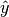 is the predicted value.
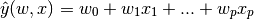
Across the module, we designate the vector 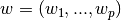 as coef_ and 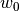 as intercept_.
To perform classification with generalized linear models, see Logistic regression.
1.1.1. Ordinary Least Squares¶
LinearRegression fits a linear model with coefficients
 to minimize the residual sum
of squares between the observed responses in the dataset, and the
responses predicted by the linear approximation. Mathematically it
solves a problem of the form:
to minimize the residual sum
of squares between the observed responses in the dataset, and the
responses predicted by the linear approximation. Mathematically it
solves a problem of the form:
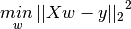
LinearRegression will take in its fit method arrays X, y
and will store the coefficients  of the linear model in its
coef_ member:
of the linear model in its
coef_ member:
>>> from sklearn import linear_model
>>> clf = linear_model.LinearRegression()
>>> clf.fit ([[0, 0], [1, 1], [2, 2]], [0, 1, 2])
LinearRegression(copy_X=True, fit_intercept=True, normalize=False)
>>> clf.coef_
array([ 0.5, 0.5])
However, coefficient estimates for Ordinary Least Squares rely on the
independence of the model terms. When terms are correlated and the
columns of the design matrix  have an approximate linear
dependence, the design matrix becomes close to singular
and as a result, the least-squares estimate becomes highly sensitive
to random errors in the observed response, producing a large
variance. This situation of multicollinearity can arise, for
example, when data are collected without an experimental design.
have an approximate linear
dependence, the design matrix becomes close to singular
and as a result, the least-squares estimate becomes highly sensitive
to random errors in the observed response, producing a large
variance. This situation of multicollinearity can arise, for
example, when data are collected without an experimental design.
Examples:
1.1.1.1. Ordinary Least Squares Complexity¶
This method computes the least squares solution using a singular value
decomposition of X. If X is a matrix of size (n, p) this method has a
cost of 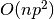, assuming that  .
.
1.1.2. Ridge Regression¶
Ridge regression addresses some of the problems of Ordinary Least Squares by imposing a penalty on the size of coefficients. The ridge coefficients minimize a penalized residual sum of squares,
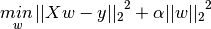
Here,  is a complexity parameter that controls the amount
of shrinkage: the larger the value of
is a complexity parameter that controls the amount
of shrinkage: the larger the value of  , the greater the amount
of shrinkage and thus the coefficients become more robust to collinearity.
, the greater the amount
of shrinkage and thus the coefficients become more robust to collinearity.
As with other linear models, Ridge will take in its fit method
arrays X, y and will store the coefficients of the linear model in
its coef_ member:
>>> from sklearn import linear_model
>>> clf = linear_model.Ridge (alpha = .5)
>>> clf.fit ([[0, 0], [0, 0], [1, 1]], [0, .1, 1])
Ridge(alpha=0.5, copy_X=True, fit_intercept=True, max_iter=None,
normalize=False, solver='auto', tol=0.001)
>>> clf.coef_
array([ 0.34545455, 0.34545455])
>>> clf.intercept_
0.13636...
Examples:
1.1.2.1. Ridge Complexity¶
This method has the same order of complexity than an Ordinary Least Squares.
1.1.2.2. Setting the regularization parameter: generalized Cross-Validation¶
RidgeCV implements ridge regression with built-in cross-validation of the alpha parameter. The object works in the same way as GridSearchCV except that it defaults to Generalized Cross-Validation (GCV), an efficient form of leave-one-out cross-validation:
>>> from sklearn import linear_model
>>> clf = linear_model.RidgeCV(alphas=[0.1, 1.0, 10.0])
>>> clf.fit([[0, 0], [0, 0], [1, 1]], [0, .1, 1])
RidgeCV(alphas=[0.1, 1.0, 10.0], cv=None, fit_intercept=True, scoring=None,
normalize=False)
>>> clf.alpha_
0.1
References
- “Notes on Regularized Least Squares”, Rifkin & Lippert (technical report, course slides).
1.1.3. Lasso¶
The Lasso is a linear model that estimates sparse coefficients. It is useful in some contexts due to its tendency to prefer solutions with fewer parameter values, effectively reducing the number of variables upon which the given solution is dependent. For this reason, the Lasso and its variants are fundamental to the field of compressed sensing. Under certain conditions, it can recover the exact set of non-zero weights (see Compressive sensing: tomography reconstruction with L1 prior (Lasso)).
Mathematically, it consists of a linear model trained with 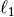 prior as regularizer. The objective function to minimize is:
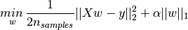
The lasso estimate thus solves the minimization of the
least-squares penalty with 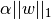 added, where
is a constant and 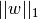 is the -norm of
the parameter vector.
The implementation in the class Lasso uses coordinate descent as the algorithm to fit the coefficients. See Least Angle Regression for another implementation:
>>> clf = linear_model.Lasso(alpha = 0.1)
>>> clf.fit([[0, 0], [1, 1]], [0, 1])
Lasso(alpha=0.1, copy_X=True, fit_intercept=True, max_iter=1000,
normalize=False, positive=False, precompute='auto', tol=0.0001,
warm_start=False)
>>> clf.predict([[1, 1]])
array([ 0.8])
Also useful for lower-level tasks is the function lasso_path that computes the coefficients along the full path of possible values.
Examples:
Note
Feature selection with Lasso
As the Lasso regression yields sparse models, it can thus be used to perform feature selection, as detailed in L1-based feature selection.
Note
Randomized sparsity
For feature selection or sparse recovery, it may be interesting to use Randomized sparse models.
1.1.3.1. Setting regularization parameter¶
The alpha parameter control the degree of sparsity of the coefficients estimated.
1.1.3.1.1. Using cross-validation¶
scikit-learn exposes objects that set the Lasso alpha parameter by cross-validation: LassoCV and LassoLarsCV. LassoLarsCV is based on the Least Angle Regression algorithm explained below.
For high-dimensional datasets with many collinear regressors, LassoCV is most often preferable. How, LassoLarsCV has the advantage of exploring more relevant values of alpha parameter, and if the number of samples is very small compared to the number of observations, it is often faster than LassoCV.
1.1.3.1.2. Information-criteria based model selection¶
Alternatively, the estimator LassoLarsIC proposes to use the Akaike information criterion (AIC) and the Bayes Information criterion (BIC). It is a computationally cheaper alternative to find the optimal value of alpha as the regularization path is computed only once instead of k+1 times when using k-fold cross-validation. However, such criteria needs a proper estimation of the degrees of freedom of the solution, are derived for large samples (asymptotic results) and assume the model is correct, i.e. that the data are actually generated by this model. They also tend to break when the problem is badly conditioned (more features than samples).
1.1.4. Elastic Net¶
ElasticNet is a linear model trained with L1 and L2 prior as regularizer. This combination allows for learning a sparse model where few of the weights are non-zero like Lasso, while still maintaining the regularization properties of Ridge. We control this tradeoff using the l1_ratio parameter.
Elastic-net is useful when there are multiple features which are correlated with one another. Lasso is likely to pick one of these at random, while elastic-net is likely to pick both.
A practical advantage of trading-off between Lasso and Ridge is it allows Elastic-Net to inherit some of Ridge’s stability under rotation.
The objective function to minimize is in this case
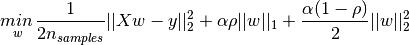

The class ElasticNetCV can be used to set the parameters
alpha () and l1_ratio ( ) by cross-validation.
) by cross-validation.
1.1.5. Multi-task Lasso¶
The MultiTaskLasso is a linear model that estimates sparse coefficients for multiple regression problems jointly: y is a 2D array, of shape (n_samples, n_tasks). The constraint is that the selected features are the same for all the regression problems, also called tasks.
The following figure compares the location of the non-zeros in W obtained with a simple Lasso or a MultiTaskLasso. The Lasso estimates yields scattered non-zeros while the non-zeros of the MultiTaskLasso are full columns.
Fitting a time-series model, imposing that any active feature be active at all times.
Mathematically, it consists of a linear model trained with a mixed
 prior as regularizer.
The objective function to minimize is:
prior as regularizer.
The objective function to minimize is:
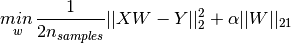
where;
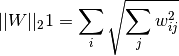
The implementation in the class MultiTaskLasso uses coordinate descent as the algorithm to fit the coefficients.
1.1.6. Least Angle Regression¶
Least-angle regression (LARS) is a regression algorithm for high-dimensional data, developed by Bradley Efron, Trevor Hastie, Iain Johnstone and Robert Tibshirani.
The advantages of LARS are:
- It is numerically efficient in contexts where p >> n (i.e., when the number of dimensions is significantly greater than the number of points)
- It is computationally just as fast as forward selection and has the same order of complexity as an ordinary least squares.
- It produces a full piecewise linear solution path, which is useful in cross-validation or similar attempts to tune the model.
- If two variables are almost equally correlated with the response, then their coefficients should increase at approximately the same rate. The algorithm thus behaves as intuition would expect, and also is more stable.
- It is easily modified to produce solutions for other estimators, like the Lasso.
The disadvantages of the LARS method include:
- Because LARS is based upon an iterative refitting of the residuals, it would appear to be especially sensitive to the effects of noise. This problem is discussed in detail by Weisberg in the discussion section of the Efron et al. (2004) Annals of Statistics article.
The LARS model can be used using estimator Lars, or its low-level implementation lars_path.
1.1.7. LARS Lasso¶
LassoLars is a lasso model implemented using the LARS algorithm, and unlike the implementation based on coordinate_descent, this yields the exact solution, which is piecewise linear as a function of the norm of its coefficients.
>>> from sklearn import linear_model
>>> clf = linear_model.LassoLars(alpha=.1)
>>> clf.fit([[0, 0], [1, 1]], [0, 1])
LassoLars(alpha=0.1, copy_X=True, eps=..., fit_intercept=True,
fit_path=True, max_iter=500, normalize=True, precompute='auto',
verbose=False)
>>> clf.coef_
array([ 0.717157..., 0. ])
Examples:
The Lars algorithm provides the full path of the coefficients along the regularization parameter almost for free, thus a common operation consist of retrieving the path with function lars_path
1.1.7.1. Mathematical formulation¶
The algorithm is similar to forward stepwise regression, but instead of including variables at each step, the estimated parameters are increased in a direction equiangular to each one’s correlations with the residual.
Instead of giving a vector result, the LARS solution consists of a curve denoting the solution for each value of the L1 norm of the parameter vector. The full coefficients path is stored in the array coef_path_, which has size (n_features, max_features+1). The first column is always zero.
References:
- Original Algorithm is detailed in the paper Least Angle Regression by Hastie et al.
1.1.8. Orthogonal Matching Pursuit (OMP)¶
OrthogonalMatchingPursuit and orthogonal_mp implements the OMP algorithm for approximating the fit of a linear model with constraints imposed on the number of non-zero coefficients (ie. the L 0 pseudo-norm).
Being a forward feature selection method like Least Angle Regression, orthogonal matching pursuit can approximate the optimum solution vector with a fixed number of non-zero elements:

Alternatively, orthogonal matching pursuit can target a specific error instead of a specific number of non-zero coefficients. This can be expressed as:

OMP is based on a greedy algorithm that includes at each step the atom most highly correlated with the current residual. It is similar to the simpler matching pursuit (MP) method, but better in that at each iteration, the residual is recomputed using an orthogonal projection on the space of the previously chosen dictionary elements.
Examples:
References:
1.1.9. Bayesian Regression¶
Bayesian regression techniques can be used to include regularization parameters in the estimation procedure: the regularization parameter is not set in a hard sense but tuned to the data at hand.
This can be done by introducing uninformative priors
over the hyper parameters of the model.
The  regularization used in Ridge Regression is equivalent
to finding a maximum a-postiori solution under a Gaussian prior over the
parameters with precision
regularization used in Ridge Regression is equivalent
to finding a maximum a-postiori solution under a Gaussian prior over the
parameters with precision  . Instead of setting
lambda manually, it is possible to treat it as a random variable to be
estimated from the data.
. Instead of setting
lambda manually, it is possible to treat it as a random variable to be
estimated from the data.
To obtain a fully probabilistic model, the output  is assumed
to be Gaussian distributed around 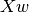:
is assumed
to be Gaussian distributed around 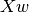:
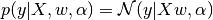
Alpha is again treated as a random variable that is to be estimated from the data.
The advantages of Bayesian Regression are:
- It adapts to the data at hand.
- It can be used to include regularization parameters in the estimation procedure.
The disadvantages of Bayesian regression include:
- Inference of the model can be time consuming.
References
- A good introduction to Bayesian methods is given in C. Bishop: Pattern Recognition and Machine learning
- Original Algorithm is detailed in the book Bayesian learning for neural networks by Radford M. Neal
1.1.9.1. Bayesian Ridge Regression¶
BayesianRidge estimates a probabilistic model of the
regression problem as described above.
The prior for the parameter is given by a spherical Gaussian:
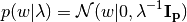
The priors over and  are chosen to be gamma
distributions, the
conjugate prior for the precision of the Gaussian.
are chosen to be gamma
distributions, the
conjugate prior for the precision of the Gaussian.
The resulting model is called Bayesian Ridge Regression, and is similar to the
classical Ridge. The parameters , and
are estimated jointly during the fit of the model. The
remaining hyperparameters are the parameters of the gamma priors over
and . These are usually chosen to be
non-informative. The parameters are estimated by maximizing the marginal
log likelihood.
By default 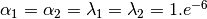.
Bayesian Ridge Regression is used for regression:
>>> from sklearn import linear_model
>>> X = [[0., 0.], [1., 1.], [2., 2.], [3., 3.]]
>>> Y = [0., 1., 2., 3.]
>>> clf = linear_model.BayesianRidge()
>>> clf.fit(X, Y)
BayesianRidge(alpha_1=1e-06, alpha_2=1e-06, compute_score=False, copy_X=True,
fit_intercept=True, lambda_1=1e-06, lambda_2=1e-06, n_iter=300,
normalize=False, tol=0.001, verbose=False)
After being fitted, the model can then be used to predict new values:
>>> clf.predict ([[1, 0.]])
array([ 0.50000013])
The weights of the model can be access:
>>> clf.coef_
array([ 0.49999993, 0.49999993])
Due to the Bayesian framework, the weights found are slightly different to the ones found by Ordinary Least Squares. However, Bayesian Ridge Regression is more robust to ill-posed problem.
Examples:
References
- More details can be found in the article Bayesian Interpolation by MacKay, David J. C.
1.1.9.2. Automatic Relevance Determination - ARD¶
ARDRegression is very similar to Bayesian Ridge Regression,
but can lead to sparser weights [1] [2].
ARDRegression poses a different prior over , by dropping the
assumption of the Gaussian being spherical.
Instead, the distribution over is assumed to be an axis-parallel,
elliptical Gaussian distribution.
This means each weight  is drawn from a Gaussian distribution,
centered on zero and with a precision
is drawn from a Gaussian distribution,
centered on zero and with a precision  :
:
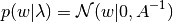
with 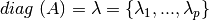.
In contrast to Bayesian Ridge Regression, each coordinate of
has its own standard deviation  . The prior over all
is chosen to be the same gamma distribution given by
hyperparameters
. The prior over all
is chosen to be the same gamma distribution given by
hyperparameters  and
and  .
.
References:
| [1] | Christopher M. Bishop: Pattern Recognition and Machine Learning, Chapter 7.2.1 |
| [2] | David Wipf and Srikantan Nagarajan: A new view of automatic relevance determination. |
1.1.10. Logistic regression¶
Logistic regression, despite its name, is a linear model for classification rather than regression. As such, it minimizes a “hit or miss” cost function rather than the sum of square residuals (as in ordinary regression). Logistic regression is also known in the literature as logit regression, maximum-entropy classification (MaxEnt) or the log-linear classifier.
The LogisticRegression class can be used to do L1 or L2 penalized logistic regression. L1 penalization yields sparse predicting weights. For L1 penalization sklearn.svm.l1_min_c allows to calculate the lower bound for C in order to get a non “null” (all feature weights to zero) model.
Note
Feature selection with sparse logistic regression
A logistic regression with L1 penalty yields sparse models, and can thus be used to perform feature selection, as detailed in L1-based feature selection.
1.1.11. Stochastic Gradient Descent - SGD¶
Stochastic gradient descent is a simple yet very efficient approach to fit linear models. It is particularly useful when the number of samples (and the number of features) is very large. The partial_fit method allows only/out-of-core learning.
The classes SGDClassifier and SGDRegressor provide functionality to fit linear models for classification and regression using different (convex) loss functions and different penalties. E.g., with loss="log", SGDClassifier fits a logistic regression model, while with loss="hinge" it fits a linear support vector machine (SVM).
References
1.1.12. Perceptron¶
The Perceptron is another simple algorithm suitable for large scale learning. By default:
- It does not require a learning rate.
- It is not regularized (penalized).
- It updates its model only on mistakes.
The last characteristic implies that the Perceptron is slightly faster to train than SGD with the hinge loss and that the resulting models are sparser.
1.1.13. Passive Aggressive Algorithms¶
The passive-aggressive algorithms are a family of algorithms for large-scale learning. They are similar to the Perceptron in that they do not require a learning rate. However, contrary to the Perceptron, they include a regularization parameter C.
For classification, PassiveAggressiveClassifier can be used with loss='hinge' (PA-I) or loss='squared_hinge' (PA-II). For regression, PassiveAggressiveRegressor can be used with loss='epsilon_insensitive' (PA-I) or loss='squared_epsilon_insensitive' (PA-II).
References:
- “Online Passive-Aggressive Algorithms” K. Crammer, O. Dekel, J. Keshat, S. Shalev-Shwartz, Y. Singer - JMLR 7 (2006)
1.1.14. Robustness to outliers: RANSAC¶
The RANSAC (RANdom SAmple Consensus) is an iterative algorithm for the robust estimation of parameters from a subset of inliers from the complete data set.
It is an iterative method to estimate the parameters of a mathematical model. RANSAC is a non-deterministic algorithm producing only a reasonable result with a certain probability, which is dependent on the number of iterations (see max_trials parameter). It is typically used for linear and non-linear regression problems and is especially popular in the fields of photogrammetric computer vision.
The algorithm splits the complete input sample data into a set of inliers, which may be subject to noise, and outliers, which are e.g. caused by erroneous measurements or invalid hypotheses about the data. The resulting model is then estimated only from the determined inliers.

Each iteration performs the following steps:
- Select min_samples random samples from the original data and check whether the set of data is valid (see is_data_valid).
- Fit a model to the random subset (base_estimator.fit) and check whether the estimated model is valid (see is_model_valid).
- Classify all data as inliers or outliers by calculating the residuals to the estimated model (base_estimator.predict(X) - y) - all data samples with absolute residuals smaller than the residual_threshold are considered as inliers.
- Save fitted model as best model if number of inlier samples is maximal. In case the current estimated model has the same number of inliers, it is only considered as the best model if it has better score.
These steps are performed either a maximum number of times (max_trials) or until one of the special stop criteria are met (see stop_n_inliers and stop_score). The final model is estimated using all inlier samples (consensus set) of the previously determined best model.
The is_data_valid and is_model_valid functions allow to identify and reject degenerate combinations of random sub-samples. If the estimated model is not needed for identifying degenerate cases, is_data_valid should be used as it is called prior to fitting the model and thus leading to better computational performance.
References:
- http://en.wikipedia.org/wiki/RANSAC
- “Random Sample Consensus: A Paradigm for Model Fitting with Applications to Image Analysis and Automated Cartography” Martin A. Fischler and Robert C. Bolles - SRI International (1981)
- “Performance Evaluation of RANSAC Family” Sunglok Choi, Taemin Kim and Wonpil Yu - BMVC (2009)
1.1.15. Polynomial Regression: Extending Linear Models with Basis Functions¶
One common pattern within machine learning is to use linear models trained on nonlinear functions of the data. This approach maintains the generally fast performance of linear methods, while allowing them to fit a much wider range of data.
For example, a simple linear regression can be extended by constructing polynomial features from the coefficients. In the standard linear regression case, you might have a model that looks like this for two-dimensional data:
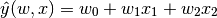
If we want to fit a paraboloid to the data instead of a plane, we can combine the features in second-order polynomials, so that the model looks like this:
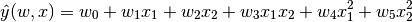
The (sometimes surprising) observation is that this is still a linear model: to see this, imagine creating a new variable
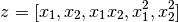
With this re-labeling of the data, our problem can be written
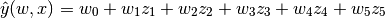
We see that the resulting polynomial regression is in the same class of
linear models we’d considered above (i.e. the model is linear in )
and can be solved by the same techniques. By considering linear fits within
a higher-dimensional space built with these basis functions, the model has the
flexibility to fit a much broader range of data.
Here is an example of applying this idea to one-dimensional data, using polynomial features of varying degrees:

This figure is created using the PolynomialFeatures preprocessor. This preprocessor transforms an input data matrix into a new data matrix of a given degree. It can be used as follows:
>>> from sklearn.preprocessing import PolynomialFeatures
>>> import numpy as np
>>> X = np.arange(6).reshape(3, 2)
>>> X
array([[0, 1],
[2, 3],
[4, 5]])
>>> poly = PolynomialFeatures(degree=2)
>>> poly.fit_transform(X)
array([[ 1, 0, 1, 0, 0, 1],
[ 1, 2, 3, 4, 6, 9],
[ 1, 4, 5, 16, 20, 25]])
The features of X have been transformed from ![[x_1, x_2]](../_images/math/96c49711bb53eae5b3697f1835b6eb50a9313fa8.png) to
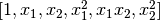, and can now be used within
any linear model.
to
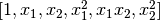, and can now be used within
any linear model.
This sort of preprocessing can be streamlined with the Pipeline tools. A single object representing a simple polynomial regression can be created and used as follows:
>>> from sklearn.preprocessing import PolynomialFeatures
>>> from sklearn.linear_model import LinearRegression
>>> from sklearn.pipeline import Pipeline
>>> model = Pipeline([('poly', PolynomialFeatures(degree=3)),
... ('linear', LinearRegression(fit_intercept=False))])
>>> # fit to an order-3 polynomial data
>>> x = np.arange(5)
>>> y = 3 - 2 * x + x ** 2 - x ** 3
>>> model = model.fit(x[:, np.newaxis], y)
>>> model.named_steps['linear'].coef_
array([ 3., -2., 1., -1.])
The linear model trained on polynomial features is able to exactly recover the input polynomial coefficients.